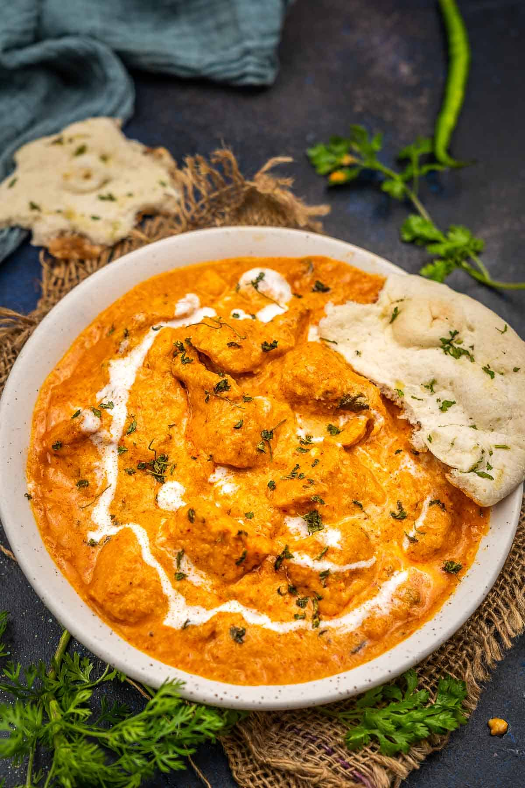

Butter Chicken Masala

Description
Butter Chicken Masala is a rich and creamy North Indian dish made with tender chicken simmered in a spiced tomato and butter-based gravy. It's known for its smooth texture, mildly spicy flavor, and irresistible aroma.
Ingredients
- 8 tablespoons peanut oil, divided
- 4 shallot, finely chopped
- 1 white onion, chopped
- 8 tablespoons butter
- 4 tablespoons ginger garlic paste
- 8 teaspoons lemon juice
- 8 teaspoons garam masala, divided
- 4 teaspoons chili powder
- 4 teaspoons ground cumin
- 4 bay leaf
- 4 cups tomato puree
- 4 cups half-and-half
- 1 cup plain yogurt
- 4 pinches salt and ground black pepper to taste
- 4 pounds boneless, skinless chicken thighs, cut into bite-size pieces
- 1 teaspoon cayenne pepper, or to taste
- 4 tablespoons cornstarch
- 1 cup water
Steps
- Heat 1 tablespoon oil in a large saucepan over medium-high heat. Sauté shallot and onion until soft and translucent, about 5 minutes.
- Stir in butter, ginger-garlic paste, lemon juice, 1 teaspoon garam masala, chili powder, cumin, and bay leaf. Cook and stir for 1 minute. Add tomato sauce, and cook for 2 minutes, continuing to frequently stir.
- Stir in half-and-half and yogurt. Reduce heat to low, and simmer for 10 minutes, frequently stirring. Season with salt and pepper. Remove from heat and set aside.
- Heat remaining 1 tablespoon oil in a large heavy skillet over medium heat. Cook chicken until lightly browned, about 10 minutes.
- Reduce heat, and season with remaining 1 teaspoon garam masala and cayenne. Stir in a few spoonfuls of sauce, and simmer until liquid has reduced, and chicken is no longer pink. Add cooked chicken into sauce and stir together.
- Dissolve cornstarch into water, then mix into the sauce. Cook for 5 to 10 minutes, or until thickened.
- Serve over rice with naan.
Home